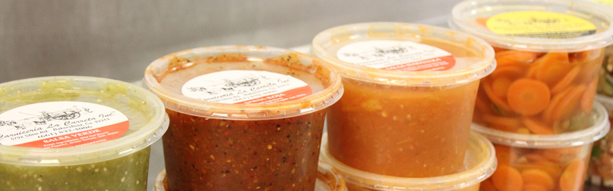
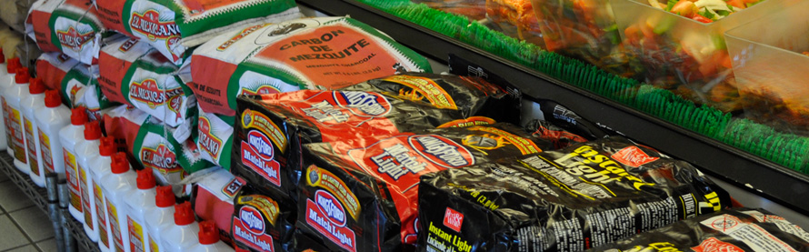
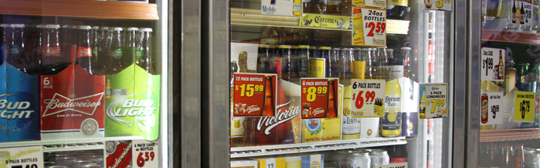

Comestibles
Somos más que una carnicería de servicio completo. También somos una tienda, que se especializa en los productos latinos. Encontrará elementos comunes para todas sus necesidades de compras. ¡Así que si usted está buscando una nueva alternativa a las cadenas de tiendas regulares, pase adentro!
Tienda Latina
Tenemos una gran variedad de artículos de abarrotes hispanas tradicionales, marcas latinas populares, y comida mexicana casera que usted no encontrará en su supermercado regular.

Main Market Originales
¿Está buscando platos mexicanos auténticos y salsas hechas con los ingredientes más frescos? No busque más. Aquí los hacemos: Salsa Habanera, Salsa Roja, Salsa Verde, Guacamole, Zanahorias en Escabeche, Pico de Gallo, y mucho más. 
Vegetales y Frutas Frescas
Tenemos deliciosas y nutritivas frutas y vegetales frescos de la granja del Valle de San Joaquín. 
Artículos Comunes de la Tienda
Para sus compras comunes, va a encontrar una amplia variedad de productos enlatados, pan, frijoles, arroz y otros alimentos básicos. Y también tenemos una gran selección de carbón para sus necesidades de la parrilla. 
Refrescos
Usted encontrará una amplia selección de licores junto con su cerveza preferida mexicana y americana. 